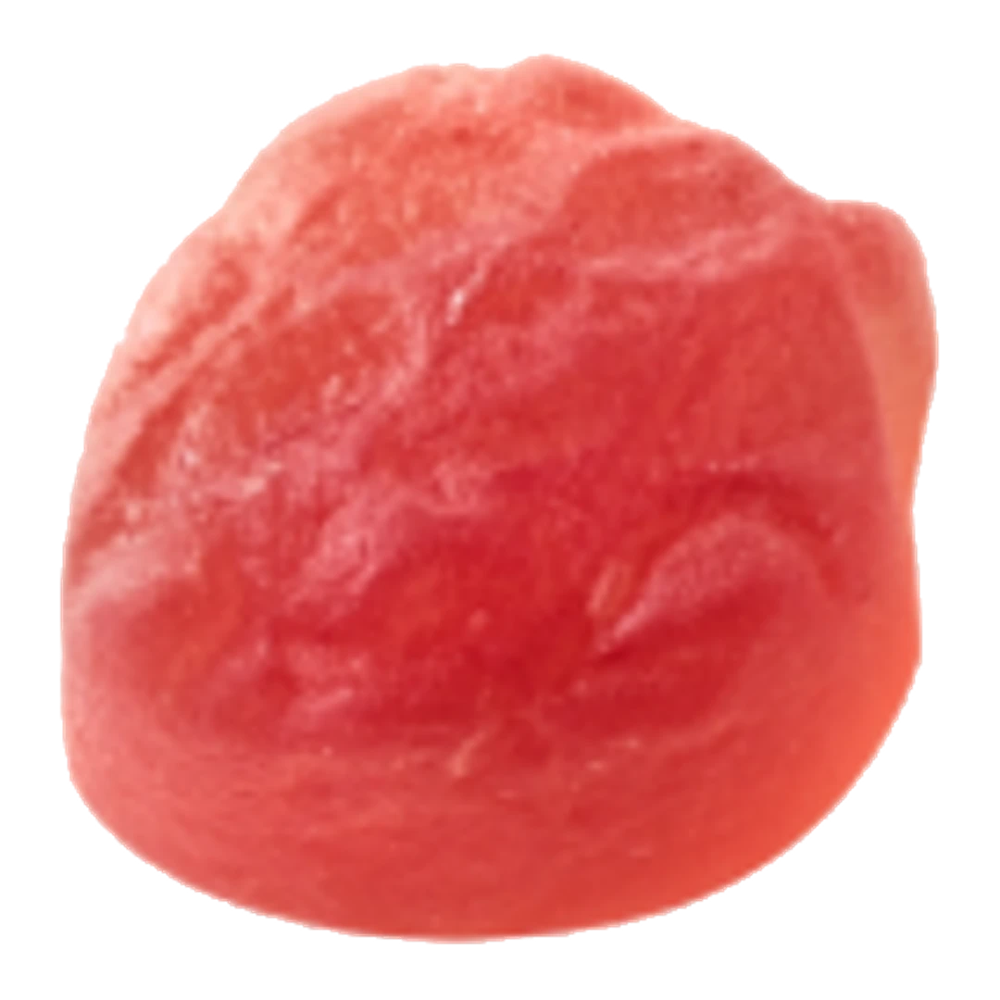
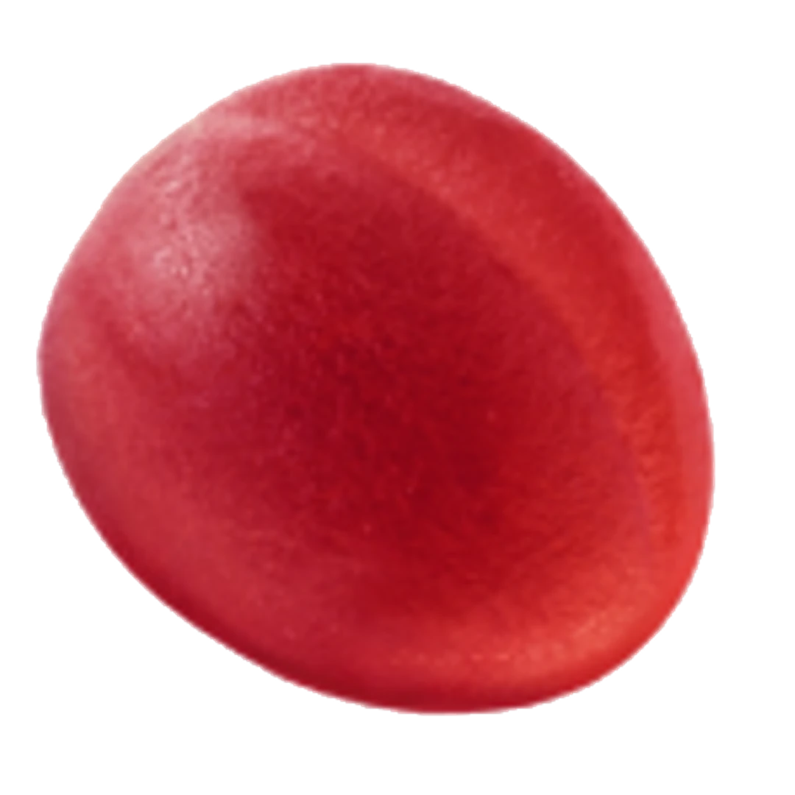
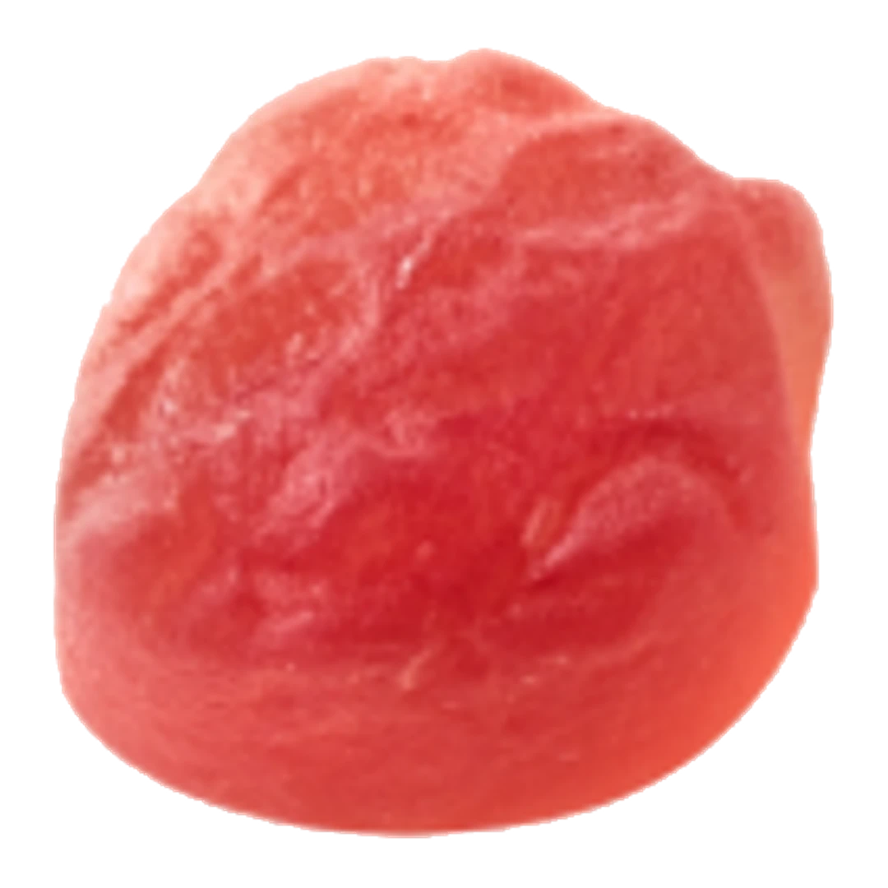
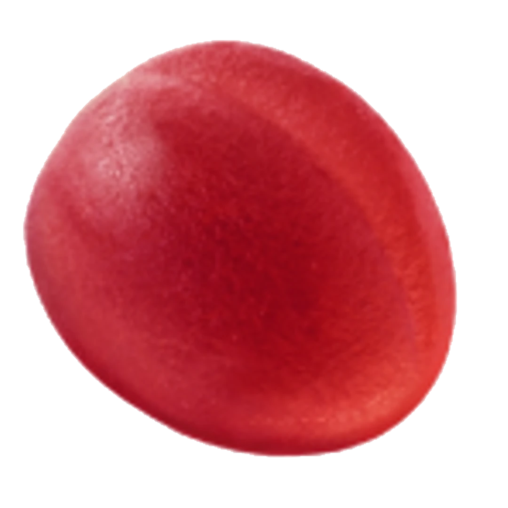
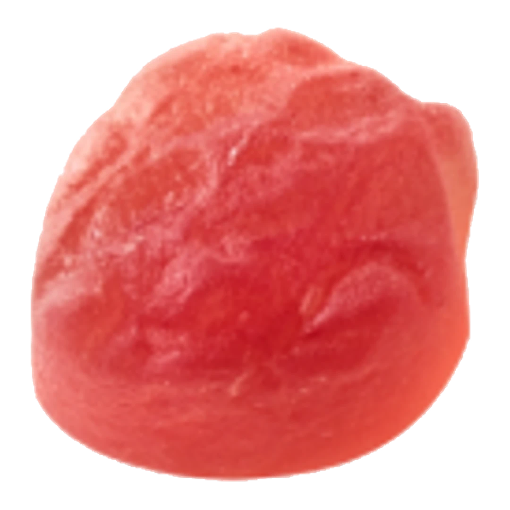
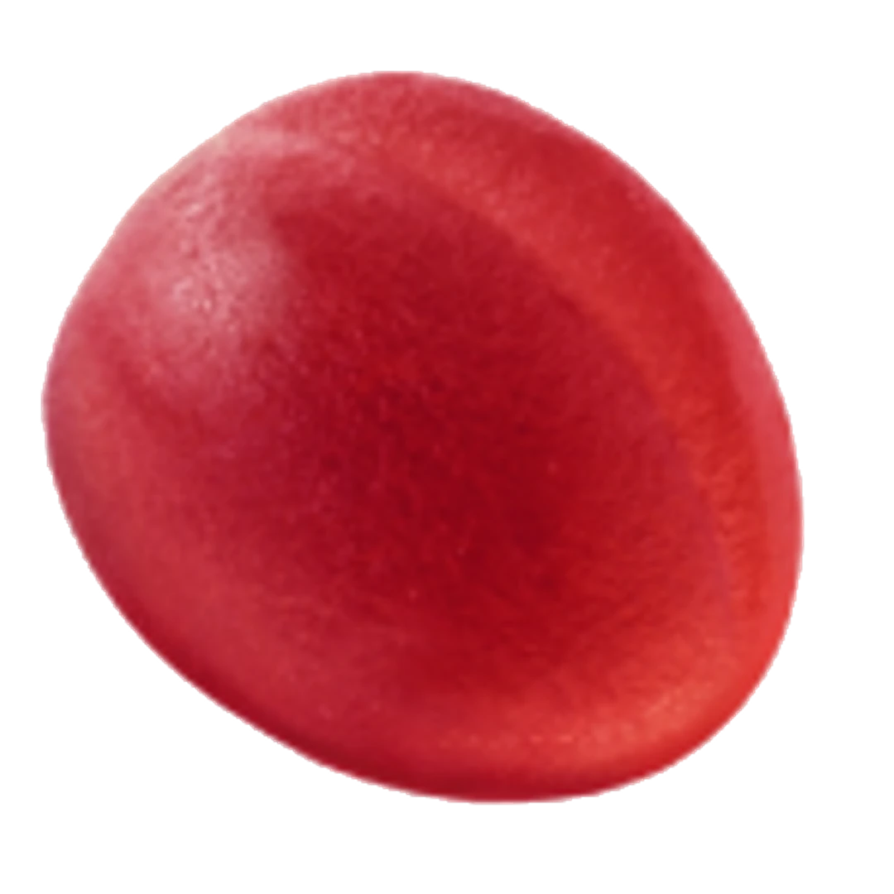

Upptäck vår saftiga samling av fruktgodis! Varje tugga är en explosion av naturliga smaker och färger. Från söt mango till syrlig citrus - låt dig förtrollas av naturens egna godisar i varje bit.

